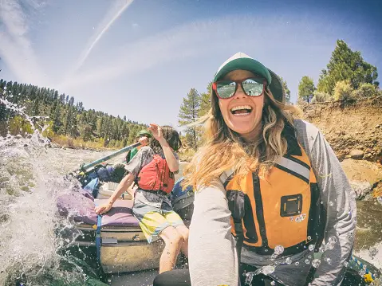
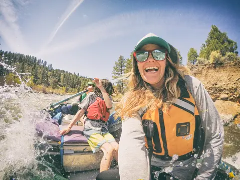

Purpose: We will help you down the river, to paddle, learn about the natural environment, and how to handle every moment of your trip. Mission: To treat every day as if it were your last day, embrace the moment. Creed: "Be strong and of good courage, fear not, nor be afraid of them: for the Lord thy God, he it is that doth go with thee; he will not fail thee, nor forsake thee." - Deuteronomy 6:31 Motto: "Let's paddle away from our problems and into the adventure!" - Unknown.


 
